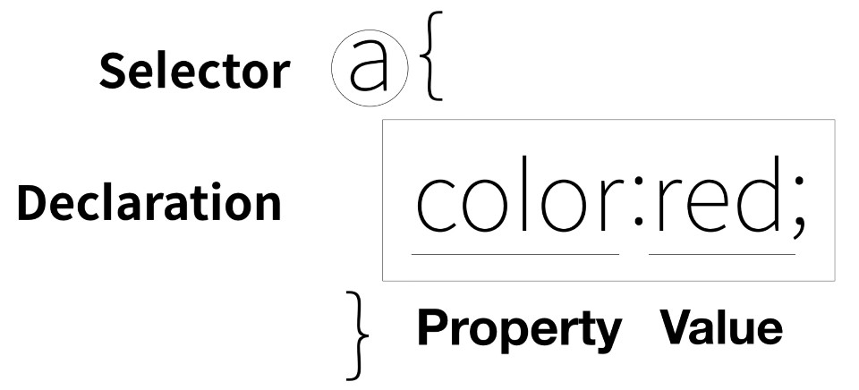

font : (지금은 사용하지 않음) 말그대로 폰트 설정하는 태그
빨간색
이 font 태그는 이 웹에 대해서 어떠한 정보도 주지 않는다. 단지 디자인..
디자인 자체가 정보가 될 수 없음 : 시각장애인이 알 수 없는 것은 정보가 아니라고 할 수 있음
CSS는 이러한 문제뿐만 아니라 중복적인 수정에 대해서도 적절한 해결책을 제공해줌!
style 태그 : 컴퓨터에게 html문법으로 지금부터는 css로 해석해야해 하고 말해줌
a { color: red; } 이렇게 쓰면 모든 a태그에 대해 폰트 컬러가 red
CSS가 도입된 이유
속성값으로 따로 색상을 설정해줄 수 있다. 이미 style에서 전체 설정 해줬어도 개별적으로 따로 설정 가능
태그 안에 style="color:purple" 이런식으로 넣으면 됨
style=""은 html 코드임, ""안에 반드시 css의 효과가 들어감
style '태그'안에는 효과만 있어서는 누구에게 주어야하는 지 모르기 때문에 a{} 같은 게 있는 거임
이 a{}이런거를 선택자(selector)라고 부름 그리고 효과는 선언(declaration)이라고 함
declaration에서 text-decoration은 그 글씨의 꾸밈효과에 대해 말함. a { text-decoration: none; } 이라고 하면 링크에 있던 밑줄이 없어짐
style 속성안에도 세미콜론으로 두가지 효과 넣기 쌉가넝 text-decoration: underline;이거 넣음요
class에 대해 설정할 때는 "."을 통해 class라는 것을 알고 명명순서대로 정의해야하고, id의 경우에는 "#"을 통해 id라는 것을 알려야 함, 단 한번만 등장해야한다 중복 x
태그 선택자가 제일 약하고, 다음이 클래스 다음이 아이디 순으로 강해짐
block element 와 inline element